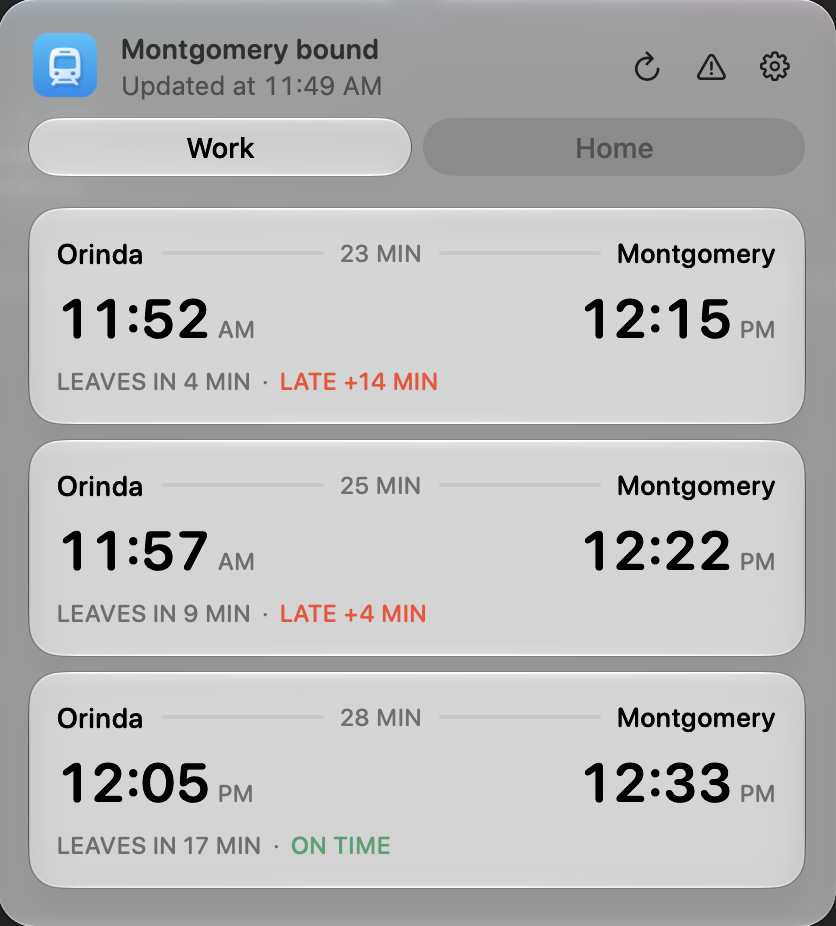

The next BART, in your menu bar.
Pick your two stations. Bart shows the next three direct trains, when each one leaves, and whether it's running late.
Download for Mac
Free. macOS 14 or later.

HomeWHAT IT SHOWSWork
- When to leave
- Each train has a LEAVES IN countdown for your station, plus when it reaches your destination and how long the ride is. Hover over the train icon in the menu bar to see the next one without clicking.
- Whether it's late
- Bart reads BART's live predictions and tells you which kind of time you're looking at.
- Which way you're going
- Before noon it shows trains to work. After noon, trains home. If you switch it yourself, it stays switched until tomorrow.
- What it won't do
- Bart only shows direct trains. If your trip needs a transfer, it says so and links to BART's trip planner.
Your MacDATABART
No account, no analytics. Bart talks to BART's public feeds and nothing else.
Live times come from GTFS Realtime, scheduled trains from the trip planner API, and service notices from BART advisories. It refreshes every 30 seconds and when your Mac wakes.
DownloadINSTALLMenu bar
About a minute to set up.
On first launch you choose your Home and Work stations and whether Bart opens at login. It checks for updates and asks before installing them.
Download for Mac- Download the DMGThe latest Bart-x.y.z.dmg from GitHub Releases.
- Drag Bart into ApplicationsThen open it.
-
Allow it once
Bart isn't notarized by Apple yet, so macOS blocks it the first time. Click Open Anyway in System Settings → Privacy & Security, or run this in Terminal:
xattr -dr com.apple.quarantine /Applications/Bart.app